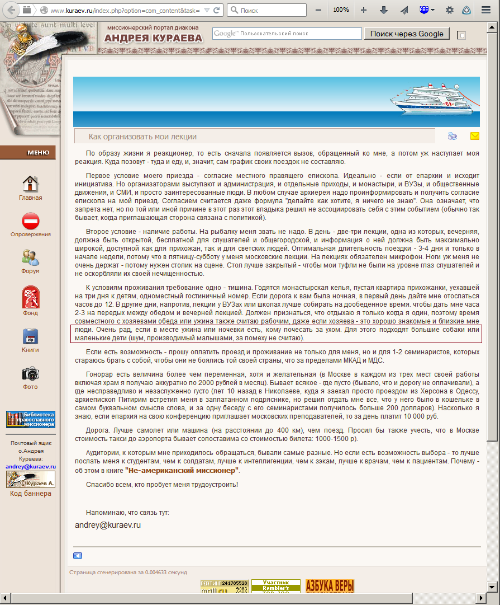

А. Кураев - автор школьного учебника "Основы религиозной культуры". Данный предмет обязателен к изучению, согласно постановлению Д. Медведьева. (уточнить номер)
Дети и большие собаки, чешущие Кураеву за ухом, присутсвуют.
Как организовать мои лекции
По образу жизни я реакционер, то есть сначала появляется вызов, обращенный ко мне, а потом уж наступает моя реакция. Куда позовут - туда и еду, и, значит, сам график своих поездок не составляю.
Первое условие моего приезда - согласие местного правящего епископа. Идеально - если от епархии и исходит инициатива. Но организаторами выступают и администрация, и отдельные приходы, и монастыри, и ВУЗы, и общественные движения, и СМИ, и просто заинтересованные люди. В любом случае архиерея надо проинформировать и получить согласие епископа на мой приезд. Согласием считается даже формула "делайте как хотите, я ничего не знаю". Она означает, что запрета нет, но по той или иной причине в этот раз этот владыка решил не ассоциировать себя с этим событием (обычно так бывает, когда приглашающая сторона связана с политикой).
Второе условие - наличие работы. На рыбалку меня звать не надо. В день - две-три лекции, одна из которых, вечерняя, должна быть открытой, бесплатной для слушателей и общегородской, и информация о ней должна быть максимально широкой, доступной как для прихожан, так и для светских людей. Оптимальная длительность поездки - 3-4 дня и только в начале недели, потому что в пятницу-субботу у меня московские лекции. На лекциях обязателен микрофон. Ноги уж меня не очень держат - потому нужен столик на сцене. Стол лучше закрытый - чтобы мои туфли не были на уровне глаз слушателей и не оскорбляли их своей нечищенностью.
К условиям проживания требование одно - тишина. Годятся монастырская келья, пустая квартира прихожанки, уехавшей на три дня к детям, одноместный гостиничный номер. Если дорога к вам была ночная, в первый день дайте мне отоспаться часов до 12. В другие дни, напротив, лекции у ВУЗах или школах лучше собирать на дообеденное время. чтобы дать мне часа 2-3 на передых между обедом и вечерней лекцией. Должен признаться, что отдыхаю я только когда я один, поэтому время совместного с хозяевами обеда или ужина также считаю рабочим, даже если хозяева - это хорошо знакомые и близкие мне люди. Очень рад, если в месте ужина или ночевки есть, кому почесать за ухом. Для этого подходят большие собаки или маленькие дети (шум, производимый малышами, за помеху не считаю).
Если есть возможность - прошу оплатить проезд и проживание не только для меня, но и для 1-2 семинаристов, которых стараюсь брать с собой, чтобы они не боялись той своей страны, что за пределами МКАД и МДС.
Гонорар есть величина более чем переменная, хотя и желательная (в Москве в каждом из трех мест своей работы включая храм я получаю аккуратно по 2000 рублей в месяц). Бывает всякое - где пусто (бывало, что и дорогу не оплачивали), а где несправедливо и незаслуженно густо (лет 10 назад в Николаеве, куда я заехал просто проездом из Херсона в Одессу, архиепископ Питирим встретил меня в заплатанном подряснике, но решил отдать мне все, что у него было в кошельке в самом буквальном смысле слова, и за одну беседу с его семинаристами получилось больше 200 долларов). Насколько я знаю, если епархия на свою конференцию приглашает московских преподавателей, то за день платит 10 000 руб.
Дорога. Лучше самолет или машина (на расстоянии до 400 км), чем поезд. Просил бы также учесть, что в Москве стоимость такси до аэропорта бывает сопоставима со стоимостью билета: 1000-1500 р).
Аудитории, к которым мне приходилось обращаться, бывали самые разные. Но если есть возможность выбора - то лучше послать меня к студентам, чем к солдатам, лучше к интеллигенции, чем к зэкам, лучше к врачам, чем к пациентам. Почему - об этом в книге "Не-американский миссионер".
Спасибо всем, кто пробует меня трудоустроить!
